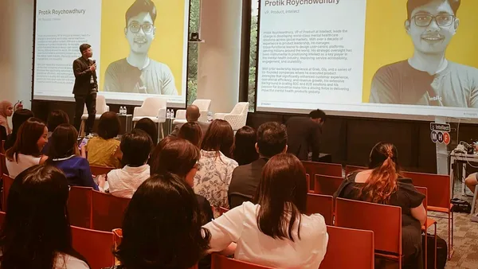

Protik speaks at product, AI, leadership, healthtech, future-of-work, and startup events. His talks draw on 15+ years of operating experience — from Grab and Ola to building AI-powered mental health products at Intellect.

AI has commoditised execution. The PMs who thrive next won't be the ones with the best frameworks — they'll be the ones with the sharpest judgement. This talk examines what changes and what doesn't when AI reshapes how products get built.
Most AI products fail not because the model is wrong, but because the trust design is missing. Drawing from shipping AI features at Intellect for 4M+ users in mental health, this talk provides a product-led framework for building AI that earns — and keeps — user trust.
In mental health technology, every interface decision is a clinical decision. Every friction point is a potential moment of harm. This talk explores what building products for vulnerable users teaches us about product design everywhere.
Most scaling advice optimises for throughput. This talk optimises for judgement — how to grow a product team from 3 to 20+ while keeping the strategic thinking that made the small team effective.
How AI is transforming mental health from one-size-fits-all to adaptive, personalised care. Drawing on Intellect's work serving 4M+ users across cultures and languages, this talk examines what works, what's risky, and what's next.
From marketplace fraud at Ola to clinical safety at Intellect — a journey through building products where getting it wrong isn't just bad UX, it's real harm. The trust principles that emerge apply to every product category.
30-45 minute talks with Q&A. In-person or virtual. Can be customised to your event theme.
Moderated or panelist roles on AI, product, trust, mental health, or marketplace topics.
Interactive 60-90 minute sessions. Best for product teams, leadership groups, and offsites.
Guest interviews on product, AI, mental health tech, founder journeys, and leadership.
Protik Roychowdhury is VP Product at Intellect, Asia's largest mental health platform (4M+ users). He builds trusted AI, marketplace, and high-stakes digital products across Asia. A three-time founder (one exit), published researcher, and ICF-certified coach with 15+ years of experience at Grab, Ola, and Exotel.
Protik Roychowdhury is VP Product at Intellect, where he leads product, design, and AI for Asia's largest mental health platform — 4M+ users across APAC, ANZ, China, and Latam at $20M ARR. He builds trusted AI, marketplace, and high-stakes digital products. Before Intellect, he led Growth, Engagement & Loyalty at Grab (Southeast Asia's leading superapp) and marketplace products at Ola (India's largest ride-hailing platform). A three-time founder and IIT Kharagpur alumnus, Protik has co-authored 3 academic papers on AI in mental health and is an ICF-certified career coach. Based in Singapore.
Please welcome Protik Roychowdhury — VP Product at Intellect, where he leads product and AI for Asia's largest mental health platform. With 15+ years building products at Grab, Ola, and three startups of his own, Protik speaks and writes about what it takes to build trusted products in the AI era.